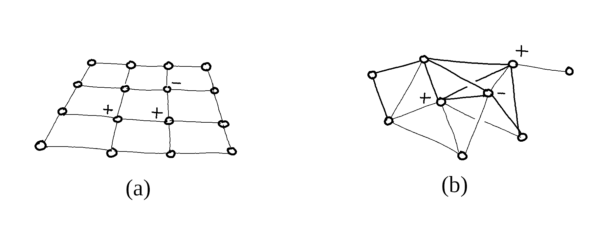
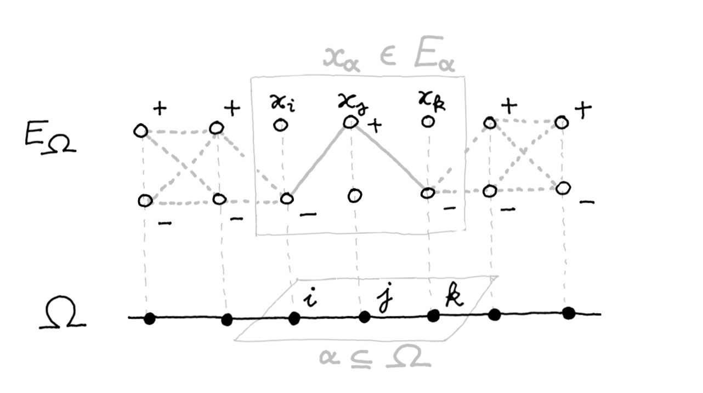
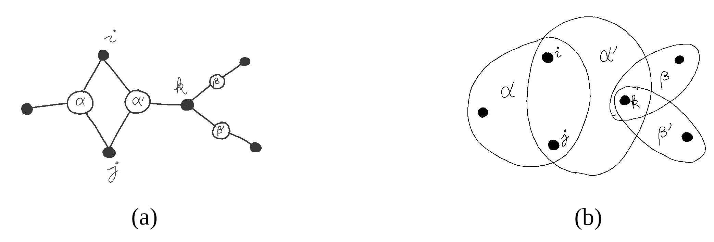

Consider a large collection $\Omega = \{i, j, k, \dots \}$ of individual variables, each of them denoted by $x_i \in E_i$ and assumed to take values in a finite configuration space $E_i$.
In physics, one would for instance describe by the cubic lattice $\Omega = {\mathbb Z}^3$ the atoms of a regular crystal, each of which carrying a spin $x_i$ in $E_i = \{ \pm 1 \}$ in the Ising model of ferromagnetism. Spin glasses drop the symmetry assumption: $\Omega$ then describes the atoms of an amorphous solid, where pairwise magnetic couplings are randomly distributed.
In communications, a sequence $x_i \in \{ 0, 1 \}$ describes a binary encoded message transmitted over a noisy communication channel. Decoding will consist in reconstructing the original message from the altered version received.
In neural networks, a binary variable $x_i$ would describe two states "not firing" and "firing at maximal rate" of an individual neuron, as in the Hopfield model of associative memory. Intermediate firing rates may be viewed as convex combinations of such extremal rates, i.e. probability densities on $E_i$.
When $\Omega$ grows large, applications face with the challenge of describing interactions and collective phenomena effectively, as the cost of global computations is exponential in the number of variables.
A global configuration of the system $x_\Omega = (x_i)_{i \in \Omega}$ gives the state of everyone simultaneously, i.e. it is a point of the cartesian product:
$$ E_\Omega = \prod_{i \in \Omega} E_i $$A local configuration of $\alpha \subseteq \Omega$ determines only the state $x_\alpha = (x_i)_{i \in \alpha}$ of variables inside $\alpha$, and we write:
$$E_\alpha = \prod_{i \in \alpha} E_i$$Given $\alpha \supseteq \beta$, a local configuration $x_\alpha \in E_\alpha$ induces a unique configuration $x_\beta \in E_\beta$, forgetting the states of variables outside $\beta$. The canonical restrictions $E_\alpha \to E_\beta$ give $E_{\bullet}$ the structure of a discrete sheaf of sets over $\Omega$:
Each $E_i$ is called the fiber above $i \in \Omega$, and $x_\alpha \in E_\alpha$ is called a local section of $E_\bullet$ over $\alpha \subseteq \Omega$.
The total hamiltonian $H_\Omega(x_\Omega)$ describes the energy of the system in each configuration. It is an element of the algebra of global observables:
$$ A_\Omega = {\mathbb R}^{E_\Omega} \simeq \bigotimes_{i \in \Omega} {\mathbb R}^{E_i} $$The dimension of $A_\Omega$ is exponential in the cardinal of $\Omega$, although in practice $H_\Omega$ is parametrised by a much smaller subspace of $A_\Omega$ and may be written as a sum of local interactions:
$$ \begin{equation} \label{H_Omega} H_\Omega(x_\Omega) = \sum_{\alpha \in X } h_{\alpha}(x_\alpha) \end{equation}$$whenever the covering $X \subseteq {\mathcal P}(\Omega)$ is coarse enough to yield all the non-zero interaction potentials. The Ising model for instance assumes only pairwise magnetic interactions between nearest neighbours, its hamiltonian decomposing as:
$$ H_\Omega(x_\Omega) = - \sum_{i} B_i \, x_i - \sum_{ij} C_{ij}\, x_i x_j $$so that $H_\Omega$ is parametrised by interaction potentials of the form:
It is common for the covering $X$ to form a graph in $\Omega$, having edges of cardinal 2 as maximal elements, although in general nothing prevents $X$ from having higher dimensional cells $\alpha \subseteq \Omega$, such as triangles, tetrahedrons, etc.
A factor graph represents $X \subseteq {\mathcal P}(\Omega)$ by a bipartite graph with a variable node for each $i \in \Omega$, a factor node for each $\alpha \in X$, and an edge between $\alpha$ and $i$ whenever $i \in \alpha$, as depicted below.
Definition. Given $X \subseteq {\mathcal P}(\Omega)$, we call potential a collection of local observables $(h_\alpha)_{\alpha \in X}$ where $h_\alpha \in {\mathbb R}^{E_\alpha}$ for all $\alpha \in X$, and denote by:
$$ A_0(X) = \bigoplus_{\alpha \in X} A_\alpha \quad \mathrm{with} \quad A_\alpha = {\mathbb R}^{E_\alpha} $$or simply by $A_0$ when unambiguous, the space of potentials over $X$.
Definition. For every $h \in A_0(X)$, we denote by:
$$ \int_X h : x_\Omega \mapsto \sum_{\alpha \in X} h_\alpha(x_\alpha) $$the global observable of $A_\Omega$ defined by summing contributions of all the potentials $h_\alpha$, as in $(\ref{H_Omega})$.